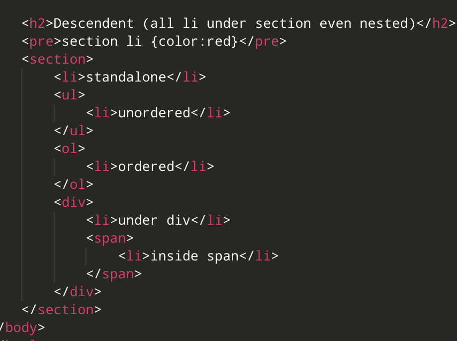

Compinators specify relationship between selectors
- Descendent (using space) selects all under the tag incl. nested
- Child combinator > immediate children
- Adjacent Sibling + , just the one after
- General Sibling ~ , all the ones after
Descendent (space), all li under section even nested
section li {color:red}
standalone
- ordered
under div
inside span

Child >, only immediate children
div>li{color:green}
standalone
Adjacent + , only the one immediately after
div+span+li{color: orange;}
div
list after div
span
div
span
list after span after div
another list but not adjacent
General sibling ~, all siblings after
span~li{color:blue}
list item under p
- first
- second
span
- li after span
- another li after span